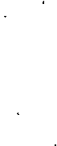

Karga Sona Kaldı
Akıntı, ortasından suyun aktığı hafif ve saydam kırışık bir ağdı. Arada sırada suyun yüzeyinde gümüşi kanatlar çırpınıyordu: Yukarı zıpladıktan hemen sonra zikzaklar çizerek suya dalan alabalığın sırtının parlayışıydı bu.
“Burası alabalık dolu,” dedi adamların biri.
“Bir bomba atarsak hepsi sırtüstü yatar suya,” dedi öteki; sonra da kemerinden bir bomba çekerek dibindeki bölümü çevirmeye başladı.
Bunun üzerine onları uzaktan izlemekte olan dağlı bir delikanlı yanlarına geldi; oğlanın elma gibi yuvarlak bir suratı vardı. “Şunu versene,” dedi ve adamlardan birinin tüfeğini aldı. Adam, “Bu da ne istiyor?” diyerek oğlanın elinden tüfeği almaya niyetlendiyse de oğlan sanki bir hedef ararmış gibi silahı suya doğrulttu. Adam, “Suya ateş edersen balıkları korkutmaktan başka bir şey yapmazsın,” diyecekti, ama buna zaman bulamadı. Bir alabalık sıçrayarak suyun üzerinde yükselmiş ve oğlan ayna anda bir el ateş ederek balığı vurmuştu. Alabalık şimdi beyaz karnıyla suyun üzerinde yatıyordu. “İnanılmaz!” dedi adamlar.
Delikanlı, silahı doldurdu ve şöyle bir çevirdi. Hava pırıl pırıl aydınlık ve sıcaktı, karşı kıyıdaki çamların iğne yaprakları ve akıntının su ağı gözle seçilebiliyordu. Suyun yüzeyi yeniden kıpırdadı ve bir başka alabalık göründü. Oğlan ateş etti, balık şimdi cansız yatıyordu suda. Adamlar bir ona, bir alabalığa bakıyorlardı. “Bu oğlan iyi ateş ediyor,” dediler.
Delikanlı, tüfeğin ağzını havaya doğrultmuştu yeniden. Düşününce pek tuhaf geliyordu, havayla çevriliydik, her şeyle aramıza sınır koyan havaydı; oysa tüfeği doğrultunca hava, tüfeğin ağzıyla o nesne, kımıltısız gibi duran kanatlarıyla havada uçan minik şahin arasında uzanan görünmez ve düz bir çizgiydi. Tetiğe basınca hava önceki gibi saydam ve boş kalıyordu, ama yukarıda çizginin öteki ucunda, minik şahin kanatlarını kapatıyor ve bir taş gibi yere düşüyordu. Tüfeğin süngüsünden güzel bir barut kokusu yayılıyordu.
Delikanlı başka kartuş istedi. Şimdi derenin kenarında duran bu çocuğu seyretmek için pek çok kişi birikmişti. Karşı kıyıdaki çamların tepesindeki kozalaklar görülebiliyorlardı da onlara neden dokunulamıyordu? Onunla nesneler arasındaki bu boş uzaklık neden vardı? Kozalaklar onun gözlerinin içindeydi, onunlaydı, ama neden böylesine uzaktı? Ama tüfeği doğrultunca boş uzaklığın bir göz aldatmacası olduğu ortaya çıkıyordu; o tetiğe basıyordu ve kozalak aynı anda fıstıklı göbeğinden parçalanarak yere düşüyordu. Okşama gibi bir boşluk duygusuydu bu, tüfeğin namlusunun boşluğu havayı aşıyor ve bir patlayışla kozalağa, sincaba, taşa, gelincik çiçeğine dek ulaşıyordu. “Bu hiç karavana atmıyor,” diyordu adamlar ve hiçbiri gülme yürekliliğini göstermiyordu.
“Sen bizimle geliyorsun,” dedi Reis.
“Ve siz de bana tüfeği veriyorsunuz,” dedi delikanlı.
“Tamam. Anlaşıldı.”
Onlarla gitti.
Azık çantasını elmalar ve iki parça peynirle doldurup yola çıktı. Köy, vadinin dibinde bir kayağantaş, saman, inek pisliği lekesiydi. Buradan gitmek güzeldi, çünkü her dönemeçte yeni şeyler, kozalaklı ağaçlar, dallardan uçan kuşlar, taşların üstünde likenler, yapay uzaklıklar erimindeki şeyler görünüyordu ve bir kurşun atımı aradaki havayı yutarak bu uzaklıkları yutuyordu.
Ne var ki ona burada ateş edilemeyeceğini söylediler, bu yollardan sessizce geçmek gerekiyordu ve kurşunlar savaşmak için gerekliydi. Ama beklenmedik bir anda adım seslerinden ürken bir tavşan, onların bağrışmaları, haykırmalarının ortasında patikaya çıkıverdi. Tam çalıların içinde gözden yitmek üzereydi ki, delikanlının attığı bir kurşun onu olduğu yerde yakaladı. “İyi bir nişandı,” dedi Reis, “ama biz ava çıkmadık. Sülün bile görsen ateş etmeyeceksin artık.”
Aradan bir saat geçmemişti ki konvoyda başka kurşun sesleri işitildi. “Gene bizim çocuk!” diye sinirlenen Reis gidip oğlanı buldu. Allı beyazlı elma yüzlü delikanlı gülüyordu. “Keklikler,” dedi göstererek. Bir çalılıktan keklik sürüsü yükselmişti.
“İster keklik olsun, ister cırcırböceği, sana söylemiştim. Ver bakayım tüfeği bana. Beni biraz daha kızdırırsan, köyüne geri dönersin.”
Delikanlı biraz somurttu; silahsız yürümenin hiç keyfi yoktu, ama onlarla olduktan sonra tüfeği yeniden ele geçirmeyi umut edebilirdi.
Geceyi bir çoban kulübesinde geçirdiler. Delikanlı gün doğarken uyanıverdi, ötekiler hâlâ uyuyorlardı. Onların en güzel tüfeğini aldı, azık çantasını şarjörle doldurdu ve çıktı. Sabahın bu erken saatlerinde hava ürkek ve ılıktı. Kulübeden az ötede bir dut ağacı vardı.
Alakargaların karınlarını doyurma saatiydi. İşte biri oradaydı, ateş etti, gitti kuşu aldı, çantasına soktu. Onu aldığı yerden kımıldamadan kendine bir başka hedef bakınırken bir gelincik gördü! Kurşun sesinden ürken hayvan bir kestane ağacının tepesine tırmanmaya niyetlenmişti. Öldürdüğü zaman, dokununca tüyleri dökülen boz kuyruklu bir fareye benzetmişti gelinciği. Kestanenin altından, daha aşağıdaki bir çayırda beyaz benekli, kırmızı ve zehirli bir mantar gördü. Bir el ateş edip mantarı bin bir parça etti, sonra da gidip hedefi tutturup tutturamadığına baktı. Bir hedeften ötekine yürümek pek eğlenceliydi, böyle böyle bir dünya turu yapabilirdi belki de. Sonra bir taşın üstünde duran bir sümüklüböceği fark etti ve onun kabuğunu hedef aldı; yanına vardığı zaman ezilmiş bir taş ve yaldızlı bir sümükten başka bir şey kalmamıştı. Tanımadığı çayırlardan aşağıya yürüyerek kulübeden uzaklaştı.
Taşın yanındayken duvarın üstündeki bir kertenkeleyi, duvarın yanından bir su birikintisini ve kurbağayı, su birikintisinden kolay bir hedef olan bir yol levhasını gördü. Levhanın yanına gittiğinde yolun zikzak yaparak indiğini gördü ve sonra aşağıda... aşağıda tüfeklerini bir hedefe doğrultmuş olarak yürüyen üniformalı adamlar vardı. Elinde bir tüfek tutarak gülümseyen bu allı beyazlı elma yüzlü delikanlının ortaya çıkmasıyla adamlar bağırmaya ve silahlarını ona çevirmeye başladılar. Ama delikanlı birinin göğsünde altınrengi düğmeler görmüş ve bir düğmeyi nişan alarak ateş etmişti bile.
Adamın çığlığını ve başının üstünden uçan kurşunların vızıltısını duydu, o çoktan yolun kenarındaki kör bir noktada bir taş yığınının arkasına gizlenmişti bile. İsterse kımıldayabilirdi de, çünkü taş yığını oldukça genişti ve adamların ummadığı bir köşeden bakınca askerlerin tüfeğinin ucundaki kıvılcımları, gri ve parlak üniformalarını ve şuraya buraya ateş ettiklerini görebiliyordu. Sonra hemen yere yattı ve sürünerek adamlara ateş açtı. Bir süre sonra kendi sırtında uçuşan kurşunları fark etti, ama kurşunlar onu aşıyor ve başka askerleri vuruyordu. Bunlar ellerinde makineli tüfeklerle yardıma gelen kendi arkadaşlarıydı. “Ya çocuk ateş edip bizi uyandırmasaydı.” diyorlardı aralarında.
Arkadaşlarının makinelilerinin ateşine sığınan delikanlı şimdi daha rahat hedef alabiliyordu. Ansızın bir mermi yanağını sıyırdı. Döndü, askerlerden biri arkasındaki yola tırmanmıştı. Kendini korumak için bir çukura yuvarlandı, ama bu arada ateş etmeyi ihmal etmeyerek askeri değilse de onun tüfeğinin tahta kabzasını vurmuştu. Askerin tüfeğini yeniden dolduramayarak yere attığını gören delikanlı delikten çıktı ve askere ateş etti, adamın apoletlerinden biri havaya uçtu.
Sonra onun peşine düştü. Asker bir an ormanda gözden yitiyor, bir an onun ateş erimine giriyordu. Miğferinin tepesini, kemerinin köprüsünü vurdu. Bu arada onu izlerken tanımadığı bir vadiye girmişti; çarpışmanın sesleri buraya gelmiyordu. Asker artık önünde orman kalmadığını, önünde uzanan açık alanda birkaç çalılıktan başka bir şey olmadığını gördü. Ama delikanlı şimdi ormandan çıkmak üzereydi bile, alanın ortasında büyük bir taş vardı, asker tam zamanında onun arkasına yattı ve bir kurbağa gibi başını dizlerinin arasına soktu.
Şimdilik orada kendini güvende hissediyordu, yanında el bombaları vardı ve delikanlı ona yaklaşamaz, ancak onun kaçmaması için tüfeğinin eriminde kalabilirdi. Elbette, bir sıçrayışta çalıların arkasına kaçabilirse, sonra vadiden aşağı kayarak inebilir ve canını kurtarabilirdi. Ama ağaçlık kısma gelene dek, aşılması gereken şu boşluk vardı: Delikanlı daha ne kadar kalırdı ki orada? Ve şu silahını hiç indirmeyecek miydi? Asker bir deneme yapmaya karar verdi: Miğferini süngüsüne taktı ve onu taşın tepesinden kaldırdı. Bir kurşun gelip miğferi delerek yere yuvarladı.
Asker yılmadı, elbette bu taşın çevresinden nişan almak kolaydı, ama eğer hızlı hareket ederse, isabet almazdı. O sırada kuşun biri hızla gökyüzünü yardı; delikanlı bir kurşun attı ve onu vurdu. Asker, boynundaki teri sildi. Sonra bir kuş daha geçti, bu bir ardıçkuşuydu; o da düştü. Asker yutkundu. Bu, bir kurtuluş yolu olabilirdi, tümü birbirinden değişik kuşlar geçmeyi sürdürüyor, delikanlı da ateş edip onları vuruyordu. Askerin aklına bir fikir geldi: “Dikkatini kuşlara verirse bana bakamaz. Tam ateş ederken kendimi atarım.” Ama belki de önce bir deneme yapsa iyi olacaktı. Kırık miğferi yeniden süngüye taktı ve hazır etti. Bu kez iki kuş yan yana geçti: çulluklar. Deneme için böyle iyi bir fırsatı kaçırdığını düşünen asker, cesaretini toplayamamıştı. Delikanlı çulluklardan birini vurduğu sırada asker miğferi kaldırdı ve miğferinin havaya uçuşunu gördü. Askerin ağzına bir kurşun tadı yayılmıştı; o anda fark etti ki, kuşların ikincisi de yere inmekteydi.
Aslında telaşlanmasına gerek yoktu, elinde bombasıyla o kayanın arkasında güvencedeydi. Gizleneceğine neden bombayla delikanlıya doğru koşmuyordu? Sırtüstü yere yattı, görünmemeye çalışarak kolunu arkasına doladı, bütün gücünü topladı ve bombayı fırlattı. İyi bir atıştı, uzağa gitmiş olmalıydı; ama yolun yarısında bir kurşun bombayı havaya uçurdu. Asker bombanın kıymıklarından sakınmak için, yüzüstü yere yattı. Başını kaldırdığında karga gelmişti. Tepesindeki gökyüzünde kara bir kuş yavaş yavaş çemberler çizerek uçuyordu; bu, bir karga olmalıydı. Şimdi çocuk ona ateş ederdi mutlaka. Ama kurşun sesinin gelmesi gecikiyordu. Acaba karga çok mu yüksekteydi? Aslında daha yüksek ve hızlı kuşları vurabilmişti. Sonunda bir Wfek sesi duyuldu, karga düşecekti şimdi. Ama hayır, kayıtsızca yavaş yavaş dönmeyi sürdürüyordu. Derken yakınındaki bir çam ağacından bir kozalak düştü. Yoksa şimdi de kozalaklara mı ateş ediyordu? Birer birer kozalaklara nişan alıyor ve her biri kuru bir ses çıkartarak yere iniyorlardı.
Her kurşun sesinde asker kargaya bakıyordu, düşüyor muydu? Hayır, kara kuş tepesinde giderek alçalarak dönmeyi sürdürüyordu. Delikanlının onu görmüyor olmasına olanak var mıydı? Belki de karga yoktu, o hayal görmeye başlamıştı. Belki de ölmek üzere olan insanlar bütün kuşların geçtiğini görmeye başlıyorlardı, kozalaklara ateş etmeyi sürdüren delikanlıyı uyarmak gerekiyordu. Bunun üzerine asker ayağa kalktı ve parmağıyla kargayı gösterdi. “Şurada bir karga var,” diye bağırdı kendi dilinde. Kurşun onu ceketine işlenmiş olan açık kanatlı kartalın tam ortasından vurdu.
Karga halkalar çizerek yavaşça alçalıyordu.
Çeviren: Eren Yücesan Cendey
